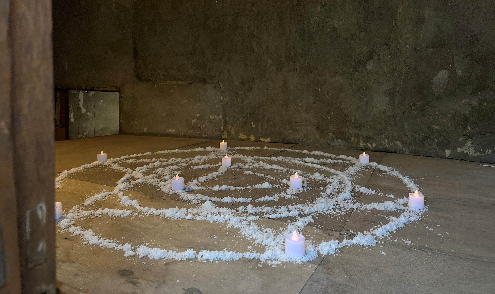
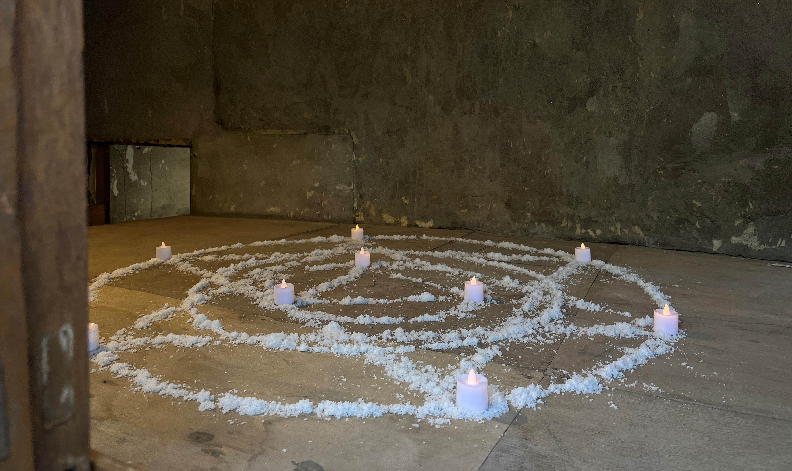
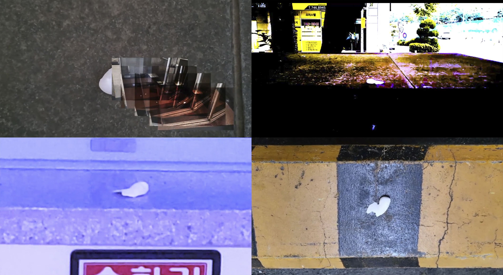
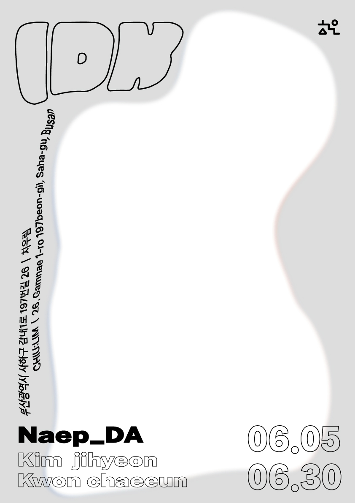
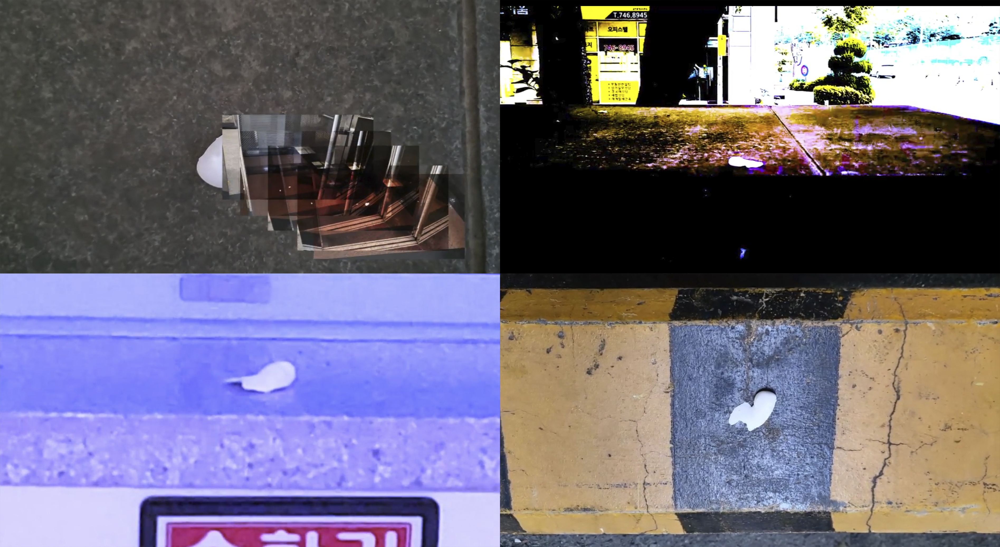
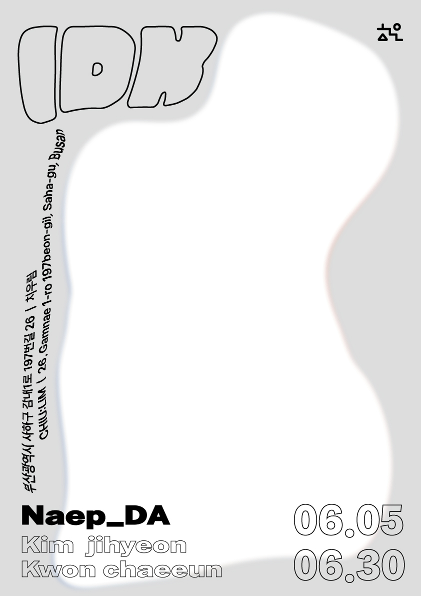

 



《IDK》
장소: 예술공간: 치우림(値遇滲)
작가: 팀 Naep_DA
두 작가가 던져놓은 작업물들은 일반적인 집이나 전시장과는 다른 공간과 맞물려 담론을 형성한다. 난 모르겠다며 냅다 저질러 버린 이것들은 언제 시작되었는지 모를 정도로 은밀하고 충분한 사유 끝에 튀어나온 것이다. 이들의 실험적인 작품들은 관람자와 만나 빈집을 하나의 유기체로 만든다.
일정 기간 전시장을 점유하여 살아가는 하얀 공들은 빈집의 시간을 드러낸다. 이들은 관람객의 손에 의해 반자동적으로 움직이고, 실타래가 풀리며 남기는 흔적은 전시 공간 속에서의 과거와 현재의 이동을 드러낸다. 작고 흐릿한 이 형상들은 모두 인식할 때만 마주할 수 있다. 작가 김지현은 이곳에서 우리를 바라보며 함께 세상을 탐험하기를 제안한다.
예술공간 : 치우림에서 김지현, 권채은 두 명의 작가가 일시적으로 Naep_DA라는 팀을 결성해
우리의 일상은 빤히 바라보는 것을 금지한다. 알지 못하는 타인의 응시는 왜인지 모를 불편함을 자아낸다. 김지현은 ‘바라보기’에 집중한다. 들여다보고 자세히 고민한다는 것은 곧 “‘나’와 ‘그것’인 타인의 관계를 ‘나와 너’의 관계로 대체”한다는 것이다(Martin Buver).
인간의 신체는 세상과 관계 맺으며 무수한 감각을 자연스럽게 받아들인다. 이번 전시에서 권채은은 일상에서 문득 느껴진 이질감을 포착했다. 갑작스럽게 사람의 형체가 이상해 보인다거나, 제사에 LED 초를 사용하는 것에 의문이 들었던 경험들처럼 논리적으로 해명할 수 없는 감각을 포착하며 이를 작업으로 풀어냈다. <헤어진 발가락 문>은 있어야 할 것 같지만 없는 것에 대한 것이다. 작품은 작가의 발을 그대로 본뜬 것이면서도 존재하지 않는 여섯 번째 발가락이 함께 붙어 현실과 가상의 경계를 뒤흔든다. 이는 영상 작업인 <형이상학적발가락>과 연결되는데, 잃어버린 여섯 번째 발가락은 작가의 일상 곳곳을 이동하며 발칙하게도 자신을 알아차려 보라는 듯하다. 이 자그마한 발가락은 현재 그리고 전시장이라는 시공간적 좌표에서 벗어나 다양한 시공간을 여행한다.●